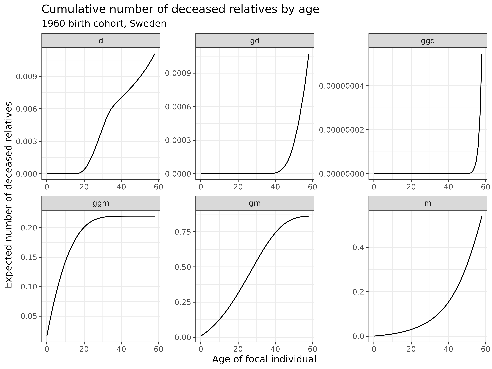

One-sex time-varying kinship model specified by age
Source:vignettes/1_2_OneSex_TimeVarying_Age.Rmd
1_2_OneSex_TimeVarying_Age.RmdLearning Objectives: In this vignette, you will learn how to extend the DemoKin time-invariant model to incorporate changing demographic rates over time. You will understand how to implement a time-varying kinship model, examine the impact of demographic change on kinship networks, and analyze related phenomena such as kin loss and prevalence of specific conditions among kin.
Introduction
While the time-invariant model we explored in the previous vignette provides valuable insights into kinship structures, it has one significant limitation: it assumes demographic conditions remain constant throughout a person’s life. In reality, mortality and fertility rates evolve dramatically over time due to socioeconomic development, medical advances, and cultural shifts.
Time-varying kinship models address this limitation by incorporating historical demographic changes, offering a more nuanced and realistic picture of family networks. These advanced models allow us to:
- Track kinship networks for specific birth cohorts across their life course
- Account for the different demographic conditions experienced by each generation
- Provide more accurate estimates of kin availability in specific historical periods
- Better understand how demographic transitions shape family structures
In this vignette, we will implement a one-sex time-varying
model, outlined in Caswell and Song (2021), using the DemoKin package.
We build on the time-invariant approach but incorporate year-specific
mortality and fertility rates to model the kinship networks of
individuals born in specific years.
Package Installation
If you haven’t already installed the required packages from the previous vignette, here’s what you’ll need:
# Install basic data analysis packages
rm(list = ls())
install.packages("dplyr") # Data manipulation
install.packages("tidyr") # Data tidying
install.packages("ggplot2") # Data visualization
install.packages("knitr") # Document generation
# Install DemoKin
# DemoKin is available on CRAN (https://cran.r-project.org/web/packages/DemoKin/index.html),
# but we'll use the development version on GitHub (https://github.com/IvanWilli/DemoKin):
install.packages("remotes")
remotes::install_github("IvanWilli/DemoKin")
library(DemoKin) # For kinship analysisTime-Varying Kinship Models
The Conceptual Shift
In the time-invariant model, we assumed that everyone experiences the same mortality and fertility rates throughout their lives (e.g., the 2015 rates). However, this is a simplification of reality. Demographic rates change over time, often dramatically:
- A woman born in 1900 would have experienced very different mortality risks at age 20 (in 1920) than a woman born in 1950 would have at age 20 (in 1970)
- Similarly, fertility patterns have shifted substantially over generations
Time-varying models account for these historical changes by using year-specific demographic rates. They provide a more realistic picture of kinship dynamics for specific birth cohorts as they age through changing demographic conditions.
Data Requirements
For time-varying models, instead of vectors of rates for a single year, we need:
-
A matrix of survival probabilities, with:
- Rows representing ages (0, 1, 2, …, 100+)
- Columns representing years (e.g., 1950, 1951, …, 2020)
A matrix of fertility rates with the same dimensions
A matrix of population counts (optional, for certain calculations)
The DemoKin package includes Swedish data in this
format, which we’ll use for our example.
Implementing the Time-Varying Model
Let’s implement a time-varying kinship model for women born in 1960 in Sweden. We’ll focus on specific kin types to make interpretation easier:
swe_time_varying <-
kin(
p = swe_px, # Matrix of survival probabilities by age and year
f = swe_asfr, # Matrix of fertility rates by age and year
n = swe_pop, # Matrix of population counts by age and year
time_invariant = FALSE, # Use time-varying model
output_cohort = 1960, # Focus on the 1960 birth cohort
output_kin = c("d","gd","ggd","m","gm","ggm") # Select specific kin types
)In this model: - We use the full matrices of Swedish demographic data
(swe_px, swe_asfr, swe_pop) - We
set time_invariant = FALSE to implement a time-varying
model - We specify output_cohort = 1960 to focus on women
born in 1960 - We select specific relatives to analyze (daughters,
granddaughters, great-granddaughters, mothers, grandmothers, and
great-grandmothers)
Living Relatives Across the Life Course
Let’s examine how the number of living kin changes throughout the life course for the 1960 birth cohort:
swe_time_varying$kin_summary %>%
ggplot(aes(age_focal, count_living, color=factor(cohort))) +
scale_y_continuous(name = "", labels = seq(0,3,.2), breaks = seq(0,3,.2)) +
geom_line(color = 1) +
geom_vline(xintercept = 35, color=2) +
labs(
title = "Expected number of living relatives for the 1960 birth cohort",
subtitle = "Swedish demographic rates, time-varying model",
x = "Age of focal individual",
y = "Expected number of living relatives"
) +
facet_wrap(~kin, scales = "free") +
theme_bw()Interpretation: These plots show how the expected number of living relatives changes as the 1960 cohort ages:
- Mothers (m): Starts near 1.0 and gradually declines as mothers die
- Grandmothers (gm): Already well below 1.0 at birth, reflecting pre-1960 mortality, then declining rapidly
- Great-grandmothers (ggm): Very few at birth, quickly disappearing
- Daughters (d): Increasing during reproductive years, reflecting fertility patterns of the 1980s-2000s
- Granddaughters (gd): Appearing as daughters reach reproductive age, reflecting fertility of the 2000s-2030s
- Great-granddaughters (ggd): Beginning to appear in later years
The red vertical line at age 35 provides a reference point to compare kin counts at a specific age. Unlike the time-invariant model, these counts reflect the actual historical demographic conditions experienced by this cohort and their relatives.
Analyzing Kin Loss
Beyond counting living kin, we can also examine patterns of kin mortality. Understanding kin loss is important because it:
- Has psychological and social consequences for bereaved individuals
- Affects the availability of support and care across generations
- Influences patterns of inheritance and resource transfers
Let’s examine the cumulative number of deceased relatives by age for our 1960 birth cohort:
swe_time_varying$kin_summary %>%
ggplot() +
geom_line(aes(age_focal, count_cum_dead)) +
labs(
title = "Cumulative number of deceased relatives by age",
subtitle = "1960 birth cohort, Sweden",
x = "Age of focal individual",
y = "Expected number of deceased relatives"
) +
theme_bw() +
facet_wrap(~kin, scales="free")
Interpretation: These graphs show the cumulative number of deaths experienced by kin type:
- Ascending relatives: Deaths accumulate gradually for mothers, and more rapidly for grandmothers and great-grandmothers
- Descending relatives: Deaths are rare but do occur, representing the tragedy of losing children, grandchildren, or great-grandchildren
We can also examine the mean age at which relatives die. For a 50-year-old woman born in 1960:
swe_time_varying$kin_summary %>%
filter(age_focal == 50) %>%
select(kin, count_cum_dead, mean_age_lost) %>%
mutate_if(is.numeric, round, 2) %>%
kable()| kin | count_cum_dead | mean_age_lost |
|---|---|---|
| d | 0.01 | 32.59 |
| gd | 0.00 | 47.13 |
| ggd | 0.00 | 49.66 |
| ggm | 0.22 | 8.94 |
| gm | 0.84 | 24.96 |
| m | 0.32 | 37.83 |
This table shows both the expected number of deceased relatives and the mean age at which they died. For example, by age 50, a woman born in 1960 would have lost approximately 0.32 mothers and the age at which such women lost mother is around 37.83 years-old on average.
Prevalence Calculations
Beyond simple counts, we can combine kinship data with prevalence rates by age to estimate the number of kin with specific characteristics. This approach, based on the Sullivan Method, allows us to:
- Estimate relatives with specific health conditions
- Calculate working-age vs. dependent kin
- Project care needs or support capacity within family networks
Let’s create a hypothetical prevalence vector that increases exponentially with age (which might represent a condition like dementia):
# Create a prevalence vector that increases exponentially with age
swe_prevalence <-
tibble(
age_kin = unique(swe_time_varying$kin_full$age_kin),
prev = .005 * exp(.05 * age_kin) # Exponential increase with age
)
# Combine with kinship data and calculate counts
swe_time_varying$kin_full %>%
left_join(swe_prevalence) %>%
group_by(kin, age_focal, cohort) %>%
summarise(
prevalent = sum(living * prev), # Kin with the condition
no_prevalent = sum(living * (1-prev)) # Kin without the condition
) %>%
pivot_longer(cols = prevalent:no_prevalent, names_to = "prevalence_state", values_to = "count") %>%
ggplot(aes(x=age_focal, y = count)) +
geom_area(aes(fill=prevalence_state)) +
labs(
title = "Expected number of relatives with and without the condition",
subtitle = "Based on age-specific prevalence rates",
x = "Age of focal individual",
y = "Number of living relatives",
fill = "Condition status"
) +
facet_wrap(~kin) +
theme_bw()
Interpretation: The stacked area plots show the expected number of relatives with and without the hypothetical condition at each age of Focal:
- For older relatives (mothers, grandmothers), the proportion with the condition increases as Focal ages, reflecting the age-related nature of the condition
- For younger relatives (daughters, granddaughters), the prevalence remains low, consistent with the age pattern of the condition
- We can see both the changing total number of relatives and the changing composition by condition status
This approach can be extended to any age-specific prevalence, such as:
- Health conditions (disability, chronic disease)
- Employment status
- Educational attainment
- Living arrangements
Conclusion
In this vignette, we’ve explored how to implement time-varying
kinship models using the DemoKin package, expanding our
analytical approach to incorporate historical demographic change.
The time-varying approach offers several advantages over time-invariant models: 1. Historical accuracy: It incorporates actual demographic changes rather than assuming constant rates 2. Cohort specificity: It can model specific birth cohorts experiencing their unique demographic conditions 3. Period effects: It captures major demographic events like wars, pandemics, or baby booms
These methodological improvements allow us to uncover important substantive insights:
- How demographic transitions reshape family structures across generations
- The unique kinship experiences of different birth cohorts as they navigate through changing mortality and fertility regimes
- How kin loss and bereavement patterns evolve in response to mortality improvements
- The complex interplay between period and cohort effects in shaping family networks
While time-varying models provide greater realism, time-invariant models still serve valuable purposes. They offer a simpler baseline for understanding kinship patterns, can project future kinship structures based on current demographic conditions, and require less data.